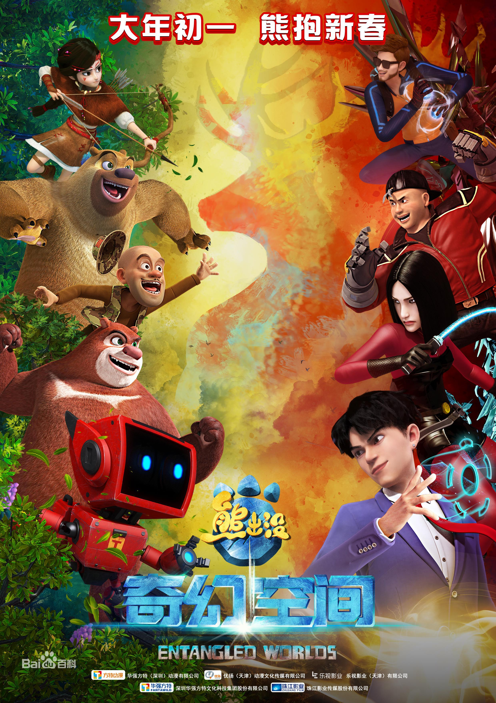
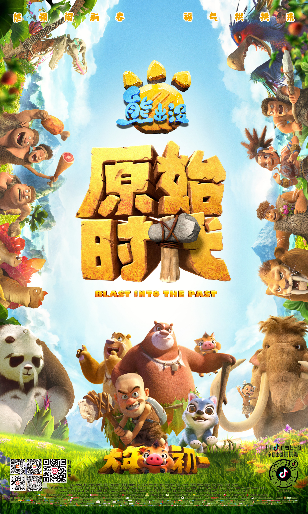
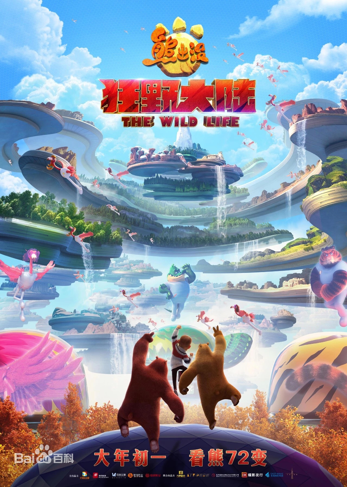
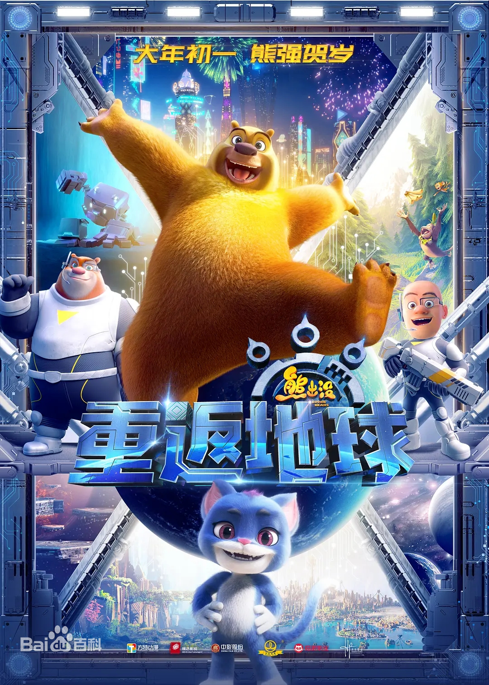

《熊出没之熊心归来》是《熊出没》系列的第三部大电影，由深圳华强数字动漫有限公司制作发行，由丁亮执导，徐芸、万秦、崔铁志编剧，张伟、张秉君、谭笑参与配音。影片主要讲述被泥石流冲走的熊大被马戏团所救并收留，成为马戏明星开始新生活的熊大，面对森林动物神秘失踪的危机和马戏团背后的秘密作出抉择的故事。影片于2016年1月16日全国首映。
熊出没·奇幻空间》是由方特动漫、优扬传媒、乐视影业、珠江影业、娱跃影业等联合出品的奇幻冒险喜剧动画电影。该片由丁亮执导，曾舜晞、尚雯婕、鲍春来、孙建宏真人出演，张伟、张秉君、谭笑等配音，并于2017年1月28日在中国内地上映。该片讲述熊大、熊二和光头强与金鹿角守护者——鹿族女孩协力保护金鹿角，击垮反派，最终让森林复苏的故事。
《熊出没·原始时代》（Boonie Bears：Blast into the Past） 是《熊出没》系列第6部动画电影，由丁亮、林汇达执导，张伟、张秉君、谭笑等人配音，于2019年2月5日在中国大陆上映 [1] 。 该片讲述了熊强三人意外穿越到原始时代，遇到被狼群驱逐的“胆小鬼”飞飞。为了保护同伴，飞飞关键时刻终于找回自己的勇气，众人齐心打败头狼度过危难的故事 [2] 。
《熊出没·变形记》是《熊出没》系列第五部大电影，由丁亮、林汇达执导，于2018年2月16日在中国内地上映。 影片讲述了光头强、熊大、熊二遭遇变形缩小后所展开的一段微观世界的冒险故事。 >>>
熊出没·狂野大陆》是由丁亮、邵和麒执导，张伟、张秉君、谭笑等人配音的动画电影，于2021年2月12日在中国大陆上映。该片讲述了光头强为百万奖金参加能变身成动物的“狂野大陆”主题乐园，不料却发现了一个惊天大阴谋的故事。 >>>
2022年林汇达执导的动画电影 《熊出没·重返地球》是由林汇达执导，张秉君、张伟、谭笑等配音的动画电影，于2022年2月1日在中国大陆上映。 [1] 该片讲述了神秘的“外星人”阿布造访狗熊岭，结识熊二后，大家一起联合打败反派，守卫家园的故事
《熊出没之雪岭熊风》是丁亮执导的冒险热血动画电影，也是《熊出没》大电影的第二部，由深圳华强数字动漫有限公司、优扬传媒（天津）等出品。该片讲述了在狗熊岭百年不遇的大雪中，熊二鼓起勇气拯救大家的故事。该片于2015年1月30日在中国上映。 >>>